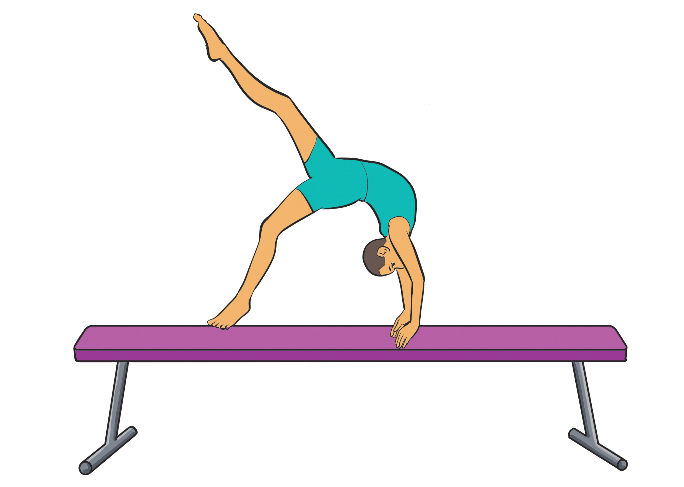

Activity 4.17
Search from the internet and other reliable sources on how to execute above the ring grip and practice it.
1. Describe how the false grip differs from the traditional overhand grip and when it is most useful in gymnastics.
2. How do the different grips affect a gymnast’s ability to hold onto the apparatus and maintain control during routines in gymnastics?
Mounts
A mount in gymnastics is the way a gymnast gets onto an apparatus at the start of their routine. It serves as the first skill and sets the tone for the rest of the performance. Mounts can be simple or complex, depending on the gymnast’s skill level and apparatus being used. There are various forms of mounts including a balance beam mounts, uneven bar mounts, parallel bar mounts, and pommel horse mounts.
Balance beam mounts
Balance beam mounts are the techniques or movements gymnasts use to get onto the balance beam at the beginning of a routine. A balance beam mounts require more precision because the beam is narrow. The following steps will help you practice a balance beam mount progressively:
- (i)Stand at the end of the beam;
- (ii)Place your hands on the beam and lift your body, landing with your stomach on the beam; and
- (iii)Push up into a sitting position or swing your legs into a straddle sit, Figure 4.18.

Figure 4.18: Mounting on a beam balance